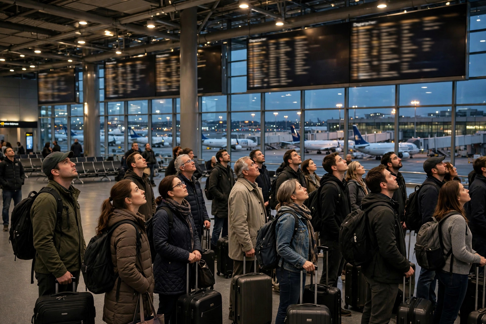

Friday, November 13, 2026 — The FAA has stopped all departing flights across the United States. Our team is following this story, and this page will be updated as the situation changes.

On Friday afternoon, November 13, 2026, the Federal Aviation Administration issued a nationwide ground stop — at about 3:54 p.m. Eastern Time, every departing flight at every U.S. airport was ordered to stay on the ground until further notice.
The cause, according to the FAA, is a temporary telecommunications outage affecting Air Route Traffic Control Centers — the facilities that manage flights across large regions of the country. FAA technicians are investigating and working on the problem.
Officials have been clear about what this is not. Transportation Secretary Sean Duffy said the ground stop followed a communication issue affecting all Air Route Traffic Control Centers. Homeland Security Secretary Markwayne Mullin said there is no indication this was an attack, and no threat to the American people — flights were halted out of an abundance of caution while the communication systems are fixed.
Planes already in the air are not being ordered to land immediately — they are continuing to their destinations. International flights heading to the United States are being handled on a case-by-case basis.
As of Friday evening, more than 4,000 flights had been canceled and over 10,000 delayed nationwide (FlightAware figures reported by ABC7). The numbers keep climbing as the stop continues, because parked planes and crews end up in the wrong cities for the next day's flights too.
The FAA advisory lists the ground stop running through at least 11:00 p.m. Eastern Time, with flights expected to be released in phases as control centers recover. The FAA's next update is expected around 11:00 p.m. Eastern. Please understand: the listed end time is not a guarantee — the order tells departing aircraft to stay grounded until further notice, and delays and cancellations will ripple into Saturday even after departures resume.
This is exactly when the scammers move. When flights get grounded, the fake texts, emails, and calls flood in:
Real airlines do not rebook you through a text link, and they never charge a fee by text to keep your seat. Those links lead to fake airline pages built to steal your login, your card number, or both.
Got a message like that? Check it free before you tap anything. Our team's free checker gives you a plain-English scam score:
How the free checker works — 3 simple steps:
Free checker: https://tallylflint-art.github.io/checker/
For more tips on how to avoid scams — like, share, and subscribe (it's free). Stuck at an airport tonight, or got one of those fake rebook texts? Comment and tell us what you are seeing, so everyone else can benefit from your experience. We can all be safer together.
Questions? Write to our team at tallylflint@gmail.com.
#BreakingNews #FAA #GroundStop #FlightDelay #FlightCancelled #FlightsGrounded #AirTravel #TravelAlert #TravelNews #Airport #Airlines #USTravel #TravelTips #PassengerRights #ScamAlert #ScamAwareness #CyberSecurity #OnlineSafety #SeniorSafety #StopScams #AntiScam
Help me help you™